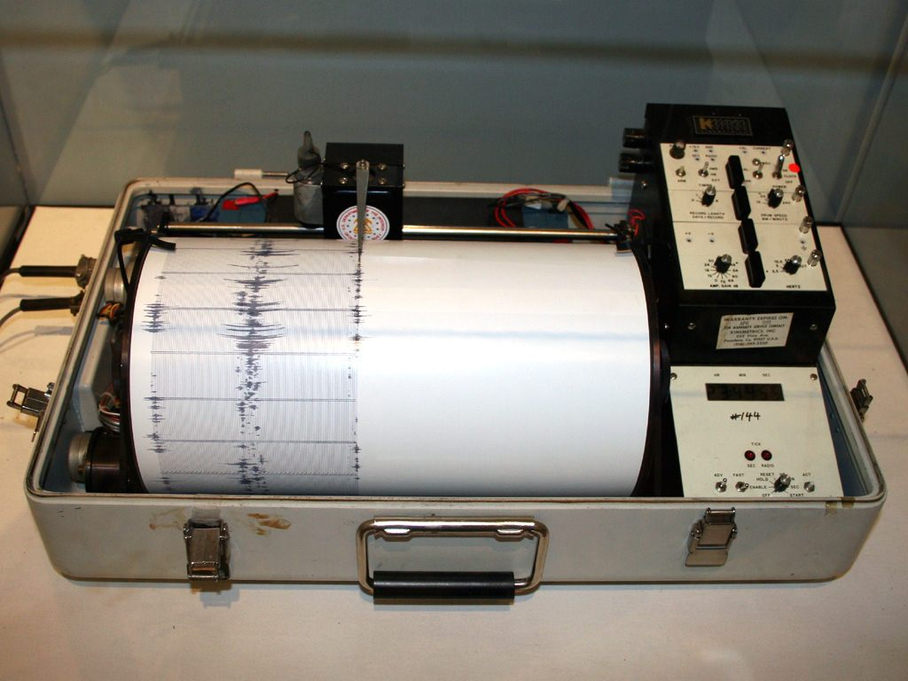
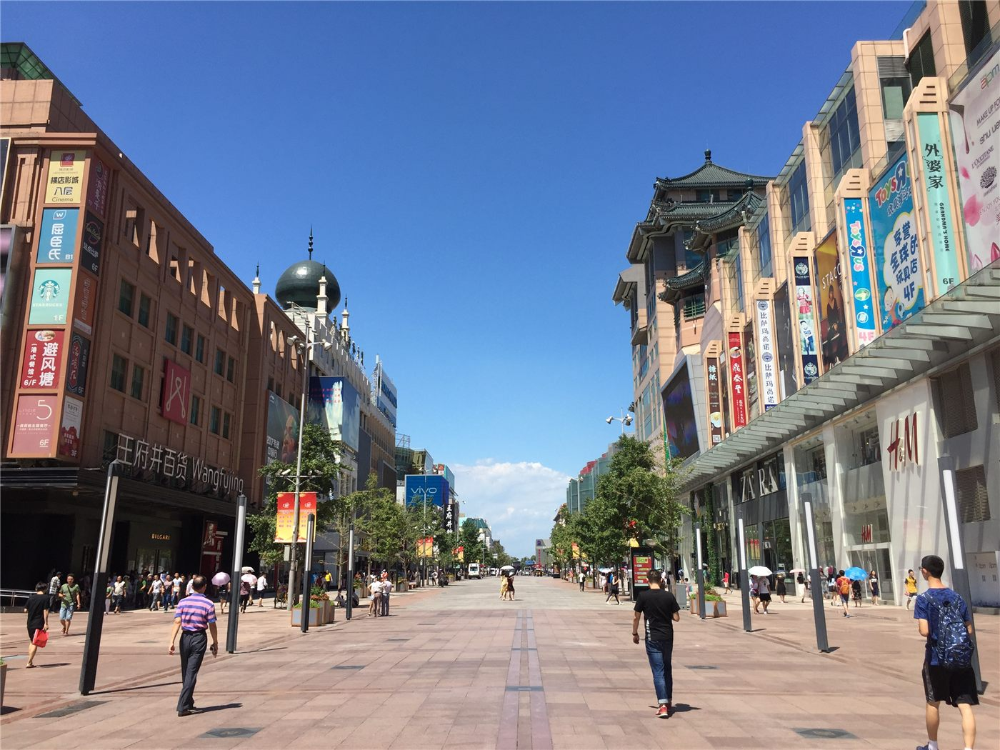

橋국제
사진=Wikimedia Commons (자유 라이선스) · 기사 주제 관련 이미지
헤드라인美, 호르무즈 ‘상선 공격’ 이란에 보복 공습… 트럼프 “그런 짓 하면 안 돼”
미군이 호르무즈 해협을 지나던 상선을 겨냥한 이란의 공격에 대응해 이란 내 군사시설을 공습했다. 트럼프 미 대통령은 이란을 향해 “그런 짓을 하면 안 된다”고 경고했고, 정전 합의 이후 가라앉던 중동 긴장이 다시 출렁였다.
정가호 기자 · 2026.06.27
미군이 호르무즈 해협을 지나던 상선을 겨냥한 이란의 공격에 대응해 이란 내 군사시설을 공습했다. 트럼프 미 대통령은 이란을 향해 “그런 짓을 하면 안 된다”고 경고했고, 정전 합의 이후 가라앉던 중동 긴장이 다시 출렁였다.

김건희 여사가 1심에서 징역 7년의 중형을 선고받았다. 재판부는 국정 사유화와 금품 수수 등을 인정하며 “평생 한 번 갖기 어려운 물품을 거리낌 없이 받았다”고 질타했다.
이재명 대통령이 이진국 감사원 감사위원 임명안을 재가하면서, 감사위원회의 대통령 임명 인사가 과반을 이루게 됐다. 감사원의 독립성과 구성을 둘러싼 논의가 다시 제기된다.

국내 휘발유 가격이 이르면 내일부터 1,800원대로 내려갈 전망이다. 정유사 공급가의 기준이 되는 최고가격이 150원가량 내리면서, 주유소 판매가에도 인하 흐름이 반영될 것으로 보인다.


강한 호우가 남부 대만을 강타하며 곳곳이 침수돼 최소 2명이 숨졌다. 기상 당국은 호우 특보를 유지했고, 가오슝·타이난·핑둥 등은 26일 전 지역 휴업·휴교를 결정했다.

대만의 경기 신호가 6개월 연속 호황을 뜻하는 ‘적색등’을 기록했다. 반도체를 비롯한 수출과 AI 관련 수요가 경기를 끌어올린 것으로 분석된다.

대만 에바항공이 미국 수도 워싱턴으로 가는 직항 노선을 처음으로 운항한다. 대만과 워싱턴을 직접 잇는 항공편으로, 인적·경제 교류 확대가 기대된다.




부산의 한 고층아파트에서 불이 나 50대 주민이 추락해 숨졌다. 고층 건물 화재의 위험성과 대피의 어려움이 다시 한번 드러난 안타까운 사고다.

원로 배우 오영수가 강제추행 혐의에 대해 대법원에서 무죄를 확정받았다. 1·2심에 이은 최종심 판단으로, 오랜 법적 다툼이 마무리됐다.

졸업 시즌을 맞아 대규모 사회초년생이 노동시장에 쏟아져 나오는 가운데, 어떤 전공이 취업에 유리한지를 짚은 분석이 주목받고 있다. 진로 선택과 노동시장의 미스매치가 다시 화두에 올랐다.